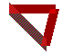
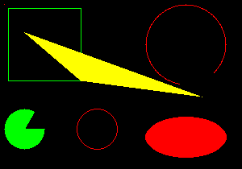
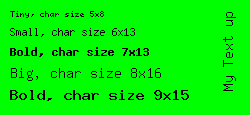
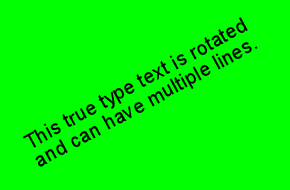
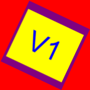

Demonstrates how to create and manipulate images with gd module based on LibGD.
Example 1: Create red PNG image with 100x100 pixel
<?v1
dl ("gd"); // Load gd module
img = imagecreatetruecolor (100, 100);
red = imagecolorallocatealpha (img, 255,0,0,0);
imagefill (img, 0, 0, red);
// If filename is null then the image will be written to standard output.
// This is useful to show the image in Web mode.
imagepng(img, "red_100x100.png");
imagedestroy (img);
?>Result:
Example 2: Create transparent PNG image and draw a triangle
<?v1
dl ("gd"); // Load gd module
img = imagecreatetruecolor (80, 60);
black = imagecolorallocatealpha (img, 0,0,0,0);
imagefill (img, 0, 0, black);
// Make background color transparent
imagecolortransparent (img, black);
// Note: The alpha color 50 (0..127) defines how much the transparent background
// shines through the color. In this example the transparent background color is
// black, that means alpha > 0 will make the color darker.
green = imagecolorallocatealpha (img, 0, 255,0, 50);
red = imagecolorallocatealpha (img, 255, 0, 0, 50);
pink = imagecolorallocatealpha (img, 255, 0, 255, 50);
// Create a style (brush) with 3 colors
imagesetstyle (img, array (pink, green, red));
// Set thickness in pixel of drawing functions, 1 = default
imagesetthickness (img, 10);
// Draw triangle
imageline (img, 10, 10, 50, 50, IMG_COLOR_STYLED);
imageline (img, 50, 50, 60, 10, red);
imageline (img, 60, 10, 10, 10, red);
imagepng(img, "transparent_triangle.png");
imagedestroy (img);
?>Result:

Example 3: Draw some primitives
<?v1
dl ("gd"); // Load gd module
img = imagecreatetruecolor (300, 210);
black = imagecolorallocatealpha (img, 0, 0, 0, 0);
imagefill (img, 0, 0, black);
green = imagecolorallocatealpha (img, 0,255, 0, 0);
red = imagecolorallocatealpha (img, 255, 0, 0, 0);
yellow = imagecolorallocatealpha (img, 255, 255, 0, 0);
// Set red pixel to 5/5
imagesetpixel (img, 5, 5, red);
// Draw green rectangle fom 10/10 to 100/100
imagerectangle (img, 10, 10, 100, 100, green);
// Draw red circle with center 120/160 and radius 50 pixel
imageellipse (img, 120, 160, 50, 50, red);
// Draw red filled ellipse/oval with center 230/170, width 100, height 50 pixel
imagefilledellipse (img, 230, 170, 100, 50, red);
// Draw green filled arcus from 0 to 300 degree
imagefilledarc (img, 30, 160, 50, 50, 0, 300, green, 4);
// Draw red open arcus from 100 to 45 degree
imagearc (img, 230, 55, 100, 100, 100, 45, red);
// Draw yellow filled polygon from position 30/40 to 100/100 to 250/120
points = array (30, 40, 100, 100, 250, 120);
imagefilledpolygon (img, points, count(points)/2, yellow);
imagepng(img, "primitives.png");
imagedestroy (img);
?>Result:

Example 4: Text with buildin fonts
<?v1
dl ("gd"); // Load gd module
img = imagecreatetruecolor (250, 115);
green = imagecolorallocatealpha (img, 0,255,0,0);
imagefill (img, 0, 0, green);
black = imagecolorallocatealpha (img, 0,0,0,0);
// LibGD has four buildin fonts with fixed char size
imagestring (img, 1, 10, 10, utf8_decode ("Tiny, char size ".imagefontwidth(1)."x".imagefontheight(1)), black);
imagestring (img, 2, 10, 25, utf8_decode ("Small, char size ".imagefontwidth(2)."x".imagefontheight(2)), black);
imagestring (img, 3, 10, 45, utf8_decode ("Bold, char size ".imagefontwidth(3)."x".imagefontheight(3)), black);
imagestring (img, 4, 10, 65, utf8_decode ("Big, char size ".imagefontwidth(4)."x".imagefontheight(4)), black);
imagestring (img, 5, 10, 87, utf8_decode ("Bold, char size ".imagefontwidth(5)."x".imagefontheight(5)), black);
// Draw text from bottom to top
imagestringup (img, 4, 220, 90, utf8_decode ("My Text up"), black);
imagepng(img, "imagetext.png");
imagedestroy (img);
?>Result:

Example 5: Text with true type front
<?v1
dl ("gd"); // Load gd module
img = imagecreatetruecolor (290, 190);
green = imagecolorallocatealpha (img, 0,255,0,0);
imagefill (img, 0, 0, green);
black = imagecolorallocatealpha (img, 0,0,0,0);
angle = 0.5; // Radiant
ttfFilename = "Arial.ttf";
fontSize = 15;
x = 30;
y = 150;
imagettftext (img, fontSize, angle, x, y, black, ttfFilename,
utf8_decode ("This true type text is rotated\r\nand can have multiple lines"));
imagepng(img, "imagetext_truetype.png");
imagedestroy (img);
?>Result:

Example 6: Load and rotate image
<?v1
dl ("gd"); // Load gd module
// Load image from file
img = imagecreatefromfile ("v1_logo.png");
red = imagecolorallocatealpha (img, 255, 0, 0, 0);
// Rotate 22.5 degrees to right with red background
img2 = imagerotate (img, -25.5, red);
imagefile (img, "image_rotate.png");
?>Result:

Example 7: Effects on images
<?v1
dl ("gd"); // Load gd module
// Load image from file
img = imagecreatefromfile ("v1_logo.png");
// Set brightsness to darker
imagefilter (img, IMG_FILTER_BRIGHTNESS, -100);
imagefile (img, "image_brightness.png");
?>Result:
More effects on images see PHP compatible function: image_filter()
Example 8: Crop images
<?v1
dl ("gd"); // Load gd module
// Load image from file
img = imagecreatefromfile ("v1_logo.png");
// Crop image area
img2 = imagecrop (img, array ("x"=>15, "y"=>20, "width"=>80, "height"=>75));
imagefile (img2, "image_crop.png");
?>Result:
Example 9: Count pixels with specific color
<?v1
dl ("gd"); // Load gd module
// Load image from file
img = imagecreatefromfile ("v1_logo.png");
// Get image dimensions
w = imagesx (img);
h = imagesy (img);
blueCnt = 0;
for (x=0;x<w;x++) {
for (y=0;y<h;y++) {
// Get pixel
p = imagegetpixel (img, x, y);
if (p==0x0000FF) // Blue
blueCnt++;
}
}
print (blueCnt." blue pixels");
?>Result: 258 blue pixels
Example 10: Video camera example (only for Windows)
<?v1
dl ("gd"); // Load gd module
// Get a list with all video drivers
drivers = videogetalldrivers ();
print_r (drivers); // Dump list
foreach (drivers as i => name)
{
// Create video for driver index
video = videocreate (i);
// Set own video format
if (!videosetformat (video, 640, 480)) {
print ("Cannot set own video format");
print_r (videogeterror (video));
break;
}
// Get properties
props = videogetprops (video);
if (!is_array (props)) {
print ("Cannot get video properties");
break;
}
// Wait some time for intialization
sleep (3000);
// Save a BMP image
videocapturebmp (video, "frame.bmp");
// Initialize own capture buffer to save a raw image frame
captureBuf = "";
resize (captureBuf, props["size_image"]);
videosetcapturebuffer (video, memref (captureBuf), false); // false = no auto conversion to RGB32, we use the raw camera data.
if (videograbframe (video)) {
print ("Raw frame with ".props["size_image"]." bytes grabbed");
// Save the frame
fh = fopen ("frame_raw.dat", "w+");
fwrite (fh, captureBuf, props["size_image"]);
fclose (fh);
}
else {
print ("videograbframe() failed");
}
// Initialize capture buffer to save a RGB32 frame
captureBuf = "";
resize (captureBuf, props["width"]*props["height"]*4);
videosetcapturebuffer (video, memref (captureBuf), true); // true = auto conversion to RGB32, Note: Only RGB24 and YUY2 are converted automatically!
if (videograbframe (video)) {
print ("RGB32 frame with ".strlen (captureBuf)." bytes grabbed");
// Save the frame
fh = fopen ("frame_rgb32.dat", "w+");
fwrite (fh, captureBuf);
fclose (fh);
}
else {
print ("videograbframe() failed");
}
// Attach the RGB32 frame to new image object and save it as WebP format
img = imagetruecolorattachbuffer (memref (captureBuf), props["width"], props["height"], -props["width"]); // -props["width"] means that the image data starts at top/left position
if (img) {
if (imagefile (img, "frame.webp"))
print ("frame.webp saved");
imagedestroy (img);
}
else {
printf ("imagetruecolorattachbuffer () failed");
}
// Dont try the other drivers
break;
}
?>